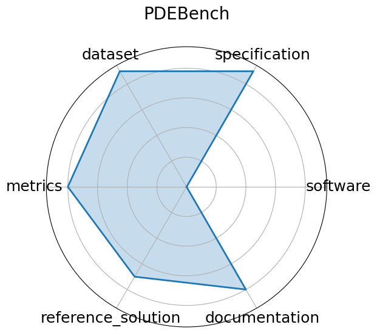

Edit: edit this entry
Date: 2022-10-13
Name: PDEBench
Domain: CFD; Weather Modeling
Focus: Benchmark suite for ML-based surrogates solving time-dependent PDEs
Keywords: PDEs, CFD, scientific ML, surrogate modeling, NeurIPS
Task Types: Supervised Learning
Metrics: RMSE, boundary RMSE, Fourier RMSE
Models: FNO, U-Net, PINN, Gradient-Based inverse methods
Citation:
Makoto Takamoto, Timothy Praditia, Raphael Leiteritz, Dan MacKinlay, Francesco Alesiani, Dirk Pflüger, and Mathias Niepert. Pdebench: an extensive benchmark for scientific machine learning. 2024. URL: https://arxiv.org/abs/2210.07182, arXiv:2210.07182.
bibtex: ``` @misc{takamoto2024pdebenchextensivebenchmarkscientific,
archiveprefix = {arXiv},
author = {Makoto Takamoto and Timothy Praditia and Raphael Leiteritz and Dan MacKinlay and Francesco Alesiani and Dirk Pflüger and Mathias Niepert},
eprint = {2210.07182},
primaryclass = {cs.LG},
title = {PDEBENCH: An Extensive Benchmark for Scientific Machine Learning},
url = {https://arxiv.org/abs/2210.07182},
year = {2024}}
```
Ratings:
Software:
Rating: 5
Reason: GitHub repository https://github.com/pdebench/PDEBench is actively maintained and includes training pipelines, data loaders, and evaluation scripts. Installation and usage are well-documented.
Specification:
Rating: 5
Reason: Clearly defined tasks for forward and inverse PDE problems, with structured input/output formats, system constraints, and task specifications.
Dataset:
Rating: 5
Reason: Diverse PDE datasets synthetic and real-world hosted on DaRUS with DOIs. Datasets are well-documented, structured, and follow FAIR practices.
Metrics:
Rating: 4
Reason: Includes RMSE, boundary RMSE, and Fourier-domain RMSE. These are well-suited to PDE problems, though rationale behind metric choices could be expanded in some cases.
Reference Solution:
Rating: 4
Reason: Baselines FNO, U-Net, PINN, etc. are available and documented, but not every model includes full training and evaluation reproducibility out-of-the-box.
Documentation:
Rating: 4
Reason: Strong documentation on GitHub including examples, configs, and usage instructions. Some model-specific details and tutorials could be further expanded.
Average Rating: 4.5
Radar Plot: 